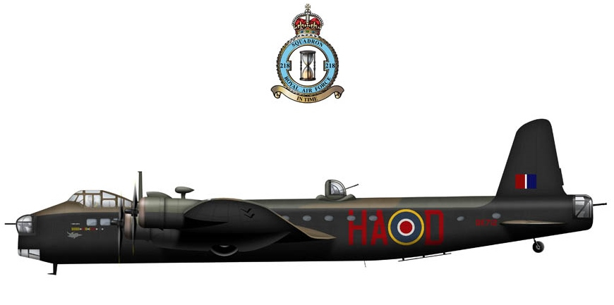
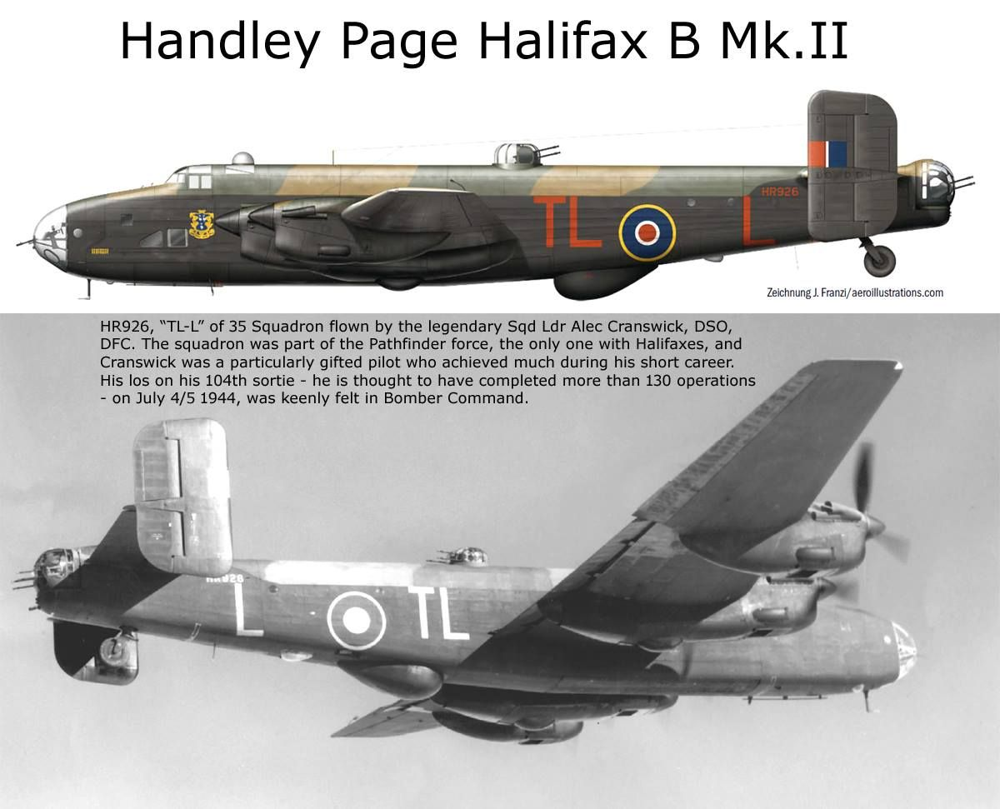
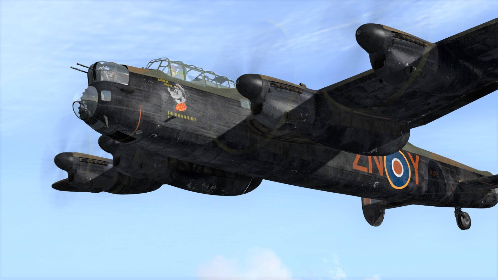

les quadrimoteurs de la RAF
Short Stirling III
La Stirling, premier gros quadrimoteur lourd du Bomber Command...

Fiche Technique :
Pays : Grande-Bretagne
Type : Bombadier quadrimoteur lourd
Poids : 19 950 kg à vide
Handley Page Halifax Mk III
Surnommé "Friday the 13th" ou vendredi 13...

Fiche Technique :
Pays : Grande-Bretagne
Type : Bombadier quadrimoteur lourd
Poids : Max 29 484 kg au décollage
Avro Lancaster B.Mk I
Ce quadrimoteur du Squadron 467 de la Royal AUstralian Air Force

Fiche Technique :
Pays : Australie
Type : Bombadier quadrimoteur long rayon d'action
Poids : 16 738 kg à vide